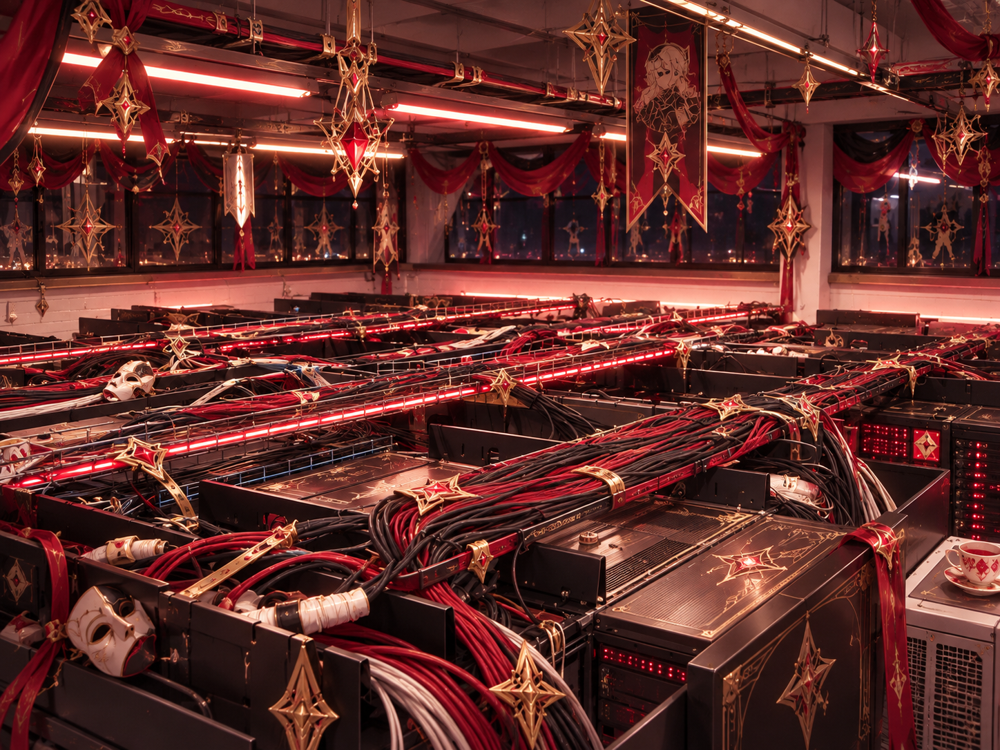

Cosa sono i data center?
Un data center è una struttura fisica che contiene server, sistemi di archiviazione, apparecchiature di rete e impianti necessari per elaborare, conservare e trasmettere grandi quantità di dati.
Sono alla base di moltissimi servizi che utilizziamo ogni giorno, come siti web, social network, servizi cloud, streaming, videogiochi online, applicazioni e intelligenza artificiale.
Immagine Originale senza modifiche: BalticServers data center, Wikimedia Commons.
A Cosa Serovono?
Archiviazione
Conservano enormi quantità di dati, come documenti, fotografie, video e informazioni aziendali.
Elaborazione
I server eseguono programmi, applicazioni e calcoli necessari per fornire servizi digitali.
Connessione
Le apparecchiature di rete permettono ai dati di viaggiare tra server, aziende e utenti.
Continuità
Alimentazione di emergenza, sistemi di raffreddamento e sicurezza aiutano a mantenere i servizi attivi.
I data center sono quindi una parte fondamentale dell'infrastruttura digitale moderna. Sono utilizzati da aziende, banche, enti pubblici, piattaforme cloud e grandi società tecnologiche.
Come sono fatti?
Un data center non è semplicemente una stanza piena di computer. È un edificio progettato per funzionare in modo continuo e sicuro.
- Server: computer che elaborano le finormazioni
- Storage: sistemi che permettono di conservare i dati.
- Rete: switch, router e collegamenti in fibra ottica.
- Raffreddamento: mantiene la temperatura adatta alle apparecchiature.
- Alimentazione: impianti elettrici, UPS e generatori garantiscono continuità.
- Sicurezza: controlli degli accessi, videosorveglianza e sistemi antincendio.

Immagine Originale senza modifiche: PDC server room, Wikimedia Commons.
Dove si trovano?
I data center possono trovarsi in molti luoghi, ma le grandi strutture vengono generalmente costruite dove è possibile avere una buona disponibilità di energia elettrica, connessioni Internet veloci, spazio e infrastrutture adeguate. Per questo motivo sono spesso presenti vicino a grandi città, nodi della rete Internet e aree industriali. Milano è particolarmente importante perché rappresenta uno dei principali punti di connessione digitale e di attività economica in Italia.
Quanti data center ci sono nella provincia di Milano?
Secondo la mappatura del Politecnico di Milano, nella Città Metropolitana di Milano risultano 33 data center attivi, distribuiti in 32 comuni. La Lombardia ne conta 49.
Il dato è particolarmente significativo perché mostra quanto sia concentrata nel territorio milanese l'infrastruttura digitale italiana. La crescita dei data center è collegata soprattutto allo sviluppo del cloud computing, dell'intelligenza artificiale e dei servizi digitali.
33
Data center attivi nel Milanese
49
Data center attivi in Lombardia
32
Comuni della città metropolitana di Milano
Fonte: Politecnico di Milano, progetto ProdAction, mappatura dei data center nell'area metropolitana.
Link ad articoli e approfondimenti
Ecco alcuni link utili per approfondire l'argomento:
- Politecnico di Milano – Milano capitale dei data center
- Amazon - Cos'è un data center?
- Geopop – Cosa sono i data center, a cosa servono e come sono fatti
- IBM – Cos'è un data center?
- A2A – Data center e sistema energetico
- Wired Italia – Data center, in Lombardia ce ne sono troppi?
- W3Schools – HTML Attributes
Concolusione
I data center sono infrastrutture fondamentali per la società digitale. Anche se spesso non li vediamo, sono alla base di moltissimi servizi che utilizziamo ogni giorno. Milano e la sua area metropolitana hanno un ruolo particolarmente importante in Italia e in Europa, e il numero e la dimensione di queste infrastrutture sono destinati a crescere.